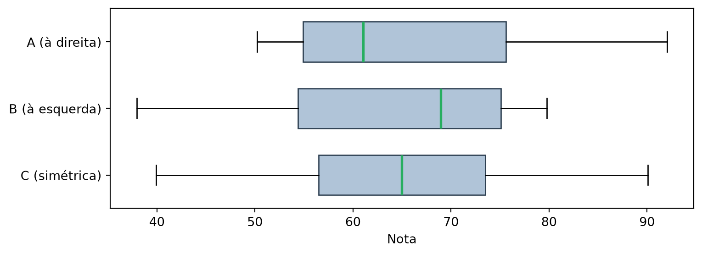
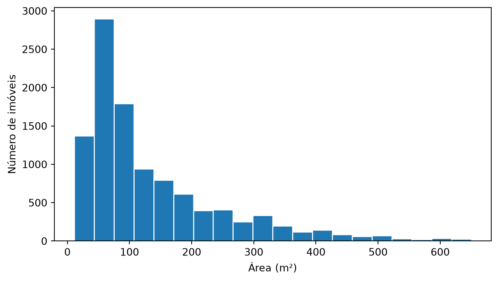

Esta seção corresponde à seção 1.5 de Bruce et al. (2020).
A seção 1.3 resumiu a população dos estados em um número: a localização. A seção 1.4 acrescentou um segundo número: a dispersão em torno dele (e, de passagem, os três quartis). Os dois primeiros já dizem bastante: onde os dados tendem a estar, e o quanto eles se afastam dali. Mas dois números continuam sendo um resumo, e todo resumo descarta informação. Esta seção para de resumir. Em vez de reduzir a distribuição a um ou dois pontos, ela olha a distribuição inteira, a forma completa que os dados assumem entre o menor e o maior valor. E começa generalizando os quartis da 1.4 para qualquer fração.
Quantis, percentis e decis
A seção 1.4 cortou os dados ordenados em quatro partes iguais e chamou os cortes de quartis. Não há nada de especial no número quatro. Generalizando, define-se o quantil de ordem \(p\), ou \(p\)-quantil, indicado por \(q(p)\), em que \(p\) é uma proporção qualquer com \(0 < p < 1\), como o valor tal que \(100p\%\) das observações são menores do que \(q(p)\).
Os casos mais usados ganham nome próprio:
Nome
Valores de \(p\)
Quantos cortes
Mediana
\(0{,}5\)
1
Quartis
\(0{,}25;\ 0{,}50;\ 0{,}75\)
3
Decis
\(0{,}1;\ 0{,}2;\ \ldots;\ 0{,}9\)
9
Percentis
\(0{,}01;\ 0{,}02;\ \ldots;\ 0{,}99\)
99
Nota
A definição de quantil de ordem \(p\) e os nomes particulares seguem a seção 3.3 de Bussab e Morettin (2023).
O percentil\(P\) é, portanto, o mesmo que \(q(P/100)\): o percentil 95 é \(q(0{,}95)\), e o percentil 50 é a mediana. Percentil e quantil são a mesma ideia em duas escalas, porcentagem e proporção. O quantile() do pandas usa a segunda: pede-se 0.95, não 95.
percentis = [0.05, 0.25, 0.5, 0.75, 0.95]tabela = pd.DataFrame(estado["Taxa.Homicidios"].quantile(percentis))tabela.index = [f"{p:.0%}"for p in percentis]tabela.transpose().map(lambda v: num(v, 3))
5%
25%
50%
75%
95%
Taxa.Homicidios
8,238
16,165
23,130
30,295
35,197
Os números das pontas dizem: 2 estados, os menos violentos do país, têm taxa de homicídios de até 8,238 por 100.000 habitantes; na outra ponta, só 2 estados superam 35,197 por 100.000 habitantes. São 7,4% dos 27 de cada lado, e não 5%, porque 5% de 27 seriam 1,35 estado. Quando o percentil não cai sobre uma observação, o valor é interpolado entre as duas vizinhas, como a seção 1.4 fez com os quartis. O intervalo entre o percentil 5 e o percentil 95 cobre os 90% centrais da distribuição e é uma forma comum de descrever o “grosso” dos dados sem deixar os extremos dominarem a leitura, do mesmo jeito que a mediana evita que eles dominem a localização.
Boxplot
O boxplot é uma leitura visual direta dos percentis. A caixa vai do primeiro ao terceiro quartil, e a largura dessa caixa é exatamente o IQR que a seção 1.4 calculou como medida de dispersão. É a mesma conta, olhada de dois ângulos diferentes. A linha dentro da caixa marca a mediana. Os bigodes param na última observação que ainda está a até 1,5 vez o IQR de cada quartil, e qualquer observação além disso é desenhada como um ponto individual, não absorvida pela escala do gráfico.
pop = estado["Populacao"]q1, q2, q3 = pop.quantile([0.25, 0.5, 0.75])dq = q3 - q1lim_inf = q1 -1.5* dqlim_sup = q3 +1.5* dqdentro = estado[(pop >= lim_inf) & (pop <= lim_sup)]fora = estado[(pop < lim_inf) | (pop > lim_sup)].sort_values("Populacao")bigode_inf = dentro.loc[dentro["Populacao"].idxmin()] # menor valor dentro dos limitesbigode_sup = dentro.loc[dentro["Populacao"].idxmax()] # maior valor dentro dos limites
Nota
A construção dos bigodes e os limites \(q_1 - 1{,}5\,d_q\) e \(q_3 + 1{,}5\,d_q\) seguem a seção 3.4 de Bussab e Morettin (2023), que chama as observações fora deles de pontos exteriores.
Cada traço do desenho marca um desses números:
Elemento do desenho
O que marca
Na população dos estados
Traço dentro da caixa
a mediana, \(q_2\)
4,145 milhões (PB)
Lado esquerdo da caixa
o primeiro quartil, \(q_1\)
2,942 milhões
Lado direito da caixa
o terceiro quartil, \(q_3\)
9,386 milhões
Largura da caixa
a distância interquartil, \(d_q = q_3 - q_1\)
6,444 milhões
Ponta do bigode da esquerda
a menor observação maior ou igual a \(q_1 - 1{,}5\,d_q\)
717 mil (RR)
Ponta do bigode da direita
a maior observação menor ou igual a \(q_3 + 1{,}5\,d_q\)
17,220 milhões (RJ)
Pontos isolados
as observações abaixo de \(q_1 - 1{,}5\,d_q\) ou acima de \(q_3 + 1{,}5\,d_q\)
Figura 1: Boxplot da população dos estados. Os pontos à direita do bigode são os estados atipicamente populosos.
Lendo o gráfico: metade dos estados tem entre 2,9 e 9,4 milhões de habitantes, e é isso que a caixa mostra. O bigode da direita não vai até o limite \(q_3 + 1{,}5\,d_q\), que dá 19,1 milhões: ele para no último estado antes dele, Rio de Janeiro. Minas Gerais (21,3 milhões) e São Paulo (46,0 milhões) passam do limite e viram pontos. Na outra ponta, o limite \(q_1 - 1{,}5\,d_q\) dá −6,7 milhões, uma população negativa, impossível. Nenhum estado fica abaixo dele, e o bigode da esquerda vai até o menor de todos, Roraima. O limite cai abaixo de zero porque a caixa é larga e fica perto do chão: é a assimetria à direita que a seção 1.4 atribuiu ao piso em zero. Com ela, aqui só podem aparecer pontos isolados do lado direito.
Tabela de frequência e histograma
A tabela de frequência divide o intervalo de valores em faixas de largura igual e conta quantas observações caem em cada uma. pd.cut faz exatamente isso.
As faixas são de largura igual, não de contagem igual, e o resultado mostra isso sem meio-termo. A primeira faixa, sozinha, concentra 15 dos 27 estados, mais da metade; as faixas do topo têm um estado cada, ou nenhum. Esse é o retrato de uma distribuição com cauda longa à direita, a mesma assinatura que a média puxada para cima (seção 1.3) e o desvio-padrão inflado (seção 1.4) já haviam denunciado, agora visível na contagem, faixa por faixa.
O histograma é essa mesma tabela desenhada: uma barra por faixa, com altura proporcional à contagem. As barras se encostam porque o eixo é contínuo: não há espaço entre “faixa 1” e “faixa 2” do jeito que há entre categorias distintas.
fig, ax = plt.subplots()(estado["Populacao"] /1e6).plot.hist(ax=ax, bins=10, edgecolor="white")ax.set_xlabel("População (milhões)")ax.set_ylabel("Número de estados")plt.tight_layout()plt.show()
Figura 2: Histograma da população. As barras se encostam porque o eixo é contínuo.
Assimetria
As seções 1.3 e 1.4 reduziram a população dos estados a dois números: um valor típico e uma medida de quanto os dados se espalham em torno dele. Considere agora três turmas fictícias de 25 alunos, com boletins idênticos: média 65, desvio-padrão 12. Se essas duas estatísticas fossem tudo que existisse para descrever uma turma, seria razoável supor que as três se parecem. Elas não se parecem: uma tem a maioria das notas abaixo da média com um rastro de notas altas puxando para cima; outra é o espelho exato dessa primeira; a terceira não tem rastro para nenhum lado. Média e variância dizem onde os dados estão centrados e quão espalhados eles estão. Nenhuma das duas diz uma palavra sobre a forma.
As quatro estatísticas a seguir tornam a diferença impossível de ignorar:
resumo = pd.DataFrame( {"Média": [num(t.mean(), 1) for t in turmas.values()],"Mediana": [num(np.median(t), 1) for t in turmas.values()],"Variância": [num(t.var(ddof=1), 1) for t in turmas.values()],"Assimetria": [num(stats.skew(t, bias=False), 2) for t in turmas.values()], }, index=list(turmas),)resumo
Média
Mediana
Variância
Assimetria
A (à direita)
65,0
61,1
144,0
0,81
B (à esquerda)
65,0
68,9
144,0
-0,81
C (simétrica)
65,0
65,0
144,0
0,00
A regra emerge sozinha da tabela, sem precisar ser decorada. Assimetria positiva → cauda à direita → média maior que a mediana (65,0 > 61,1, turma A). Assimetria negativa → cauda à esquerda → média menor que a mediana (65,0 < 68,9, turma B). Assimetria zero → média igual à mediana (65,0 = 65,0, turma C).
O motivo é o mesmo que a seção 1.3 já expôs para a média sozinha, agora com um número que o mede: a cauda longa arrasta a média, porque ela soma todos os valores (inclusive os poucos que estão longe do resto), e não move a mediana, que só enxerga o valor do meio da fila.
Regra prática: assimetria positiva significa cauda à direita e média acima da mediana; assimetria negativa significa cauda à esquerda e média abaixo da mediana; assimetria zero significa média e mediana coincidindo. O sinal da assimetria é o sinal da diferença entre média e mediana.
Figura 3: Três turmas com a mesma média e a mesma variância, e formas completamente diferentes. A linha vermelha é a média; a verde tracejada, a mediana.
No painel A, a maioria das notas se aglomera abaixo de 65, com um rastro de notas altas se estendendo para a direita. É esse rastro que empurra a linha vermelha (média) para além da linha verde tracejada (mediana). No painel B a imagem é o espelho: a maioria das notas fica acima de 65, com o rastro agora à esquerda, e a média fica abaixo da mediana. No painel C não há rastro para nenhum dos dois lados, e as duas linhas praticamente se sobrepõem. O sharey=True importa: sem ele, cada painel escolheria sua própria escala vertical, e a comparação entre as três formas ficaria distorcida.
O histograma mostra a forma inteira, mas a assimetria aparece igualmente bem no boxplot, que resume cada turma em cinco números. Empilhando os três lado a lado, a diferença salta aos olhos mesmo sem contar nenhuma nota:
fig, ax = plt.subplots(figsize=(8, 3))caixas = ax.boxplot( [turma_c, turma_b, turma_a], # de baixo para cima: simétrica, esquerda, direita tick_labels=["C (simétrica)", "B (à esquerda)", "A (à direita)"], orientation="horizontal", patch_artist=True, medianprops={"color": "#27ae60", "linewidth": 2}, widths=0.6,)for caixa in caixas["boxes"]: caixa.set(facecolor="#b0c4d8", edgecolor="#2c3e50")ax.set_xlabel("Nota")plt.tight_layout()plt.show()

Figura 4: As mesmas três turmas em boxplot. A linha central é a mediana; a caixa vai do primeiro ao terceiro quartil; os bigodes alcançam o restante das notas.
Repare em onde a linha da mediana cai dentro da caixa. Na turma A (à direita), ela encosta no lado esquerdo da caixa, abaixo do centro, e o bigode direito é longo, alcançando as poucas notas altas. É a mesma cauda à direita do histograma, agora comprimida em uma barra. Na turma B a caixa é o espelho perfeito: mediana encostada à direita, bigode longo à esquerda. Na turma C a mediana fica no centro exato e os dois bigodes têm o mesmo comprimento. Uma caixa cuja mediana não está no meio, ou cujos bigodes têm comprimentos diferentes, é um boxplot lhe dizendo, sem nenhum número, que a distribuição é assimétrica.
A assimetria (skewness) mede esse desequilíbrio entre as caudas em um único número:
O expoente 3 é o que faz a fórmula funcionar: ele preserva o sinal do desvio. Um desvio acima da média entra positivo; um desvio abaixo, negativo. Eles se cancelariam, como cancelam na média dos desvios simples (seção 1.4), a menos que uma das caudas seja mais comprida ou mais extrema que a outra. É exatamente esse desequilíbrio residual que sobra depois do cancelamento. Compare com o desvio-padrão: ali o desvio é elevado ao quadrado. O quadrado de um número negativo é positivo, e o sinal desaparece. É por isso que o desvio-padrão, por mais que meça dispersão, não diz absolutamente nada sobre para qual lado os dados pendem.
Voltando aos dados reais das 27 unidades federativas:
print(f"População das UFs : {num(stats.skew(estado['Populacao'], bias=False), 2)}")print(f"Taxa de homicídios : {num(stats.skew(estado['Taxa.Homicidios'], bias=False), 2)}")
População das UFs : 2,96
Taxa de homicídios : -0,19
A população tem assimetria de 2,96, fortemente à direita. É a mesma razão, vista por outro ângulo, pela qual a seção 1.3 encontrou uma média 90% maior que a mediana: um único estado, São Paulo, está tão distante do resto que arrasta a média para cima sem deslocar a mediana um centímetro. A taxa de homicídios, com -0,19, está quase simétrica: média e mediana quase coincidem, e a distância entre elas quase desaparece.
O número que o stats.skew(..., bias=False) imprime não é exatamente o coeficiente de momentos \(g_1\) da fórmula acima, e sim o estimador corrigido de viés\(G_1\), que multiplica \(g_1\) pelo fator \(\frac{\sqrt{n(n-1)}}{n-2}\). Com \(n = 27\) esse fator é um pouco maior que 1, então o 2,96 impresso fica ligeiramente acima do que a fórmula “crua” \(g_1\) daria. A correção compensa a tendência de \(g_1\) a subestimar a assimetria em amostras pequenas.
Essa cauda à direita também não é acaso. A seção 1.4 mostrou, ao tentar aumentar o desvio-padrão da taxa de homicídios sem mexer na média, que o piso em zero trava quanto uma variável positiva pode se espalhar para baixo, mas não trava nada para cima. É essa assimetria estrutural entre o chão e a ausência de teto que empurra população, renda e tantas outras variáveis que só existem como números positivos sempre para o mesmo lado: a direita.
Resumo
Ferramenta
O que mostra
Percentis / quantis
A posição exata de qualquer fração dos dados
Boxplot
\(q_1\), mediana, \(q_3\) e outliers num único desenho compacto
Tabela de frequência / histograma
Como a massa dos dados se distribui em faixas de largura igual
Assimetria
Para qual lado a distribuição pende, e o sinal da diferença entre média e mediana
Regra prática: localização (1.3) e dispersão (1.4) respondem “qual é o valor típico” e “o quanto os dados variam”. Elas não respondem “qual é a forma da distribuição”: se ela é simétrica, se tem cauda longa, se há grupos isolados de valores extremos. Para isso, é preciso abrir mão do resumo e olhar a distribuição inteira, com as ferramentas desta seção.
Exercícios
1. A mediana da taxa de homicídios é 23,130 e o percentil 95 é 35,197. Interprete o segundo número em uma frase.
DicaResposta
O percentil 95 indica que só 5% dos estados ficam acima de 35,197 homicídios por 100.000 habitantes. Com 27 estados, isso não dá um número inteiro (seriam 1,35 estado): na prática, 2 estados (7,4% do total) ficam acima, e 25 (92,6%) ficam em 35,197 ou abaixo.
2. No boxplot, por que os pontos além do bigode são desenhados individualmente em vez de o bigode simplesmente se estender até eles?
DicaResposta
Por convenção, o bigode para na última observação que está a até 1,5×IQR do quartil. Pontos além disso são candidatos a outlier e são marcados individualmente justamente para chamar atenção: o objetivo é que você os veja, e não que eles sejam absorvidos pela escala do gráfico.
3. A tabela de frequência com pd.cut em 10 faixas colocou mais da metade dos estados (15 de 27) na primeira faixa. Isso é um defeito do método?
DicaResposta
Não. É um retrato fiel dos dados. pd.cut cria faixas de largura igual, e a distribuição de população dos estados é assimétrica. Se o objetivo fosse faixas de contagem igual, a ferramenta certa seria pd.qcut (que corta por quantis, não por largura). São perguntas diferentes: uma mostra a forma da distribuição, a outra a divide em grupos do mesmo tamanho.
4. Um relatório informa que a renda média de um município é R$ 4.200 e a mediana é R$ 2.100. Sem ver os dados, o que você pode afirmar sobre a assimetria da distribuição de renda? E se média e mediana fossem iguais?
DicaResposta
A média é o dobro da mediana, então a assimetria é positiva (à direita): há uma cauda de rendas altas puxando a média para cima, enquanto a mediana permanece onde está a maior parte das pessoas. É o padrão universal da renda, e a razão pela qual se reporta a mediana. Se média e mediana fossem iguais, a distribuição seria simétrica, o que, para renda, praticamente não acontece.
Agora é com você
De volta aos 10.692 aluguéis das seções 1.3 e 1.4. Você já sabe onde está o centro e quanto os valores se espalham; falta a forma, e é nela que este conjunto mais surpreende.
Quatro tarefas, na ordem. Tente antes de abrir cada resposta.
1. Calcule os percentis 5, 25, 50, 75 e 95 de aluguel e de condominio, e ponha o máximo de cada uma na última linha da tabela. Compare o percentil 95 com o máximo: o que a distância entre eles diz?
DicaResposta
colunas = ["aluguel", "condominio"]percentis = [0.05, 0.25, 0.5, 0.75, 0.95]tabela = alugueis[colunas].quantile(percentis)tabela.index = [f"{p:.0%}"for p in percentis]tabela.loc["máximo"] = alugueis[colunas].max()tabela.astype(int)
aluguel
condominio
5%
859
0
25%
1530
170
50%
2661
560
75%
5000
1237
95%
12000
3167
máximo
45000
1117000
Em aluguel, 95% dos imóveis custam até R$ 12.000, e o máximo é R$ 45.000, cerca de 3,8 vezes o P95. Em condominio a distância é de outra ordem: P95 de R$ 3.167 contra um máximo de R$ 1.117.000, 353 vezes maior. Os 5% finais de uma distribuição de cauda longa são outro mundo, e o percentil 95 é justamente a ferramenta para resumir “o típico entre os altos” sem deixar o máximo falar sozinho.
2. Desenhe o boxplot de aluguel. Pela regra de 1,5×IQR, calcule o limite superior do bigode e conte quantos imóveis são outliers. Que fração do conjunto isso representa? Há outliers pelo lado de baixo?
Boxplot do aluguel. A caixa é o IQR; os pontos à direita do bigode são os outliers pela regra de 1,5×IQR.
715 imóveis (6,7% do conjunto) passam do limite do bigode da direita (R$ 10.205). Pelo lado de baixo, 0: o limite inferior dá R$ -3.675, e não existe aluguel tão barato. Essa assimetria do próprio boxplot (bigode curto à esquerda, chuva de pontos à direita) já é a assinatura visual da cauda longa à direita. E note a proporção: num dado normal, a regra de 1,5×IQR marca menos de 1% dos valores como outlier; aqui marca 6,7%. Quando “outlier” vira uma fatia visível do conjunto, o problema está em esperar simetria de um dado que não a tem.
3. Monte a tabela de frequência de area_m2 em 10 faixas de largura igual (pd.cut) e desenhe o histograma. Por que ficaram inúteis? Refaça as duas coisas só com os imóveis até o percentil 99 da área e compare.
Dez faixas de largura igual entre o mínimo e 46.335 m² dão faixas de cerca de 4.634 m² cada, e 10.689 dos 10.692 imóveis caem na primeira. Não é um histograma; é uma barra e nove faixas quase vazias. Um único valor absurdo dita a escala inteira, e a forma real dos outros dez mil desaparece.
corte = alugueis["area_m2"].quantile(0.99)ate_corte = alugueis.loc[alugueis["area_m2"] <= corte, "area_m2"]print(f"percentil 99 = {num(corte, 0)} m² → {num(len(ate_corte), 0)} imóveis dentro do corte")pd.cut(ate_corte, 10).value_counts().sort_index()
percentil 99 = 650 m² → 10.585 imóveis dentro do corte
fig, ax = plt.subplots()ate_corte.plot.hist(ax=ax, bins=20, edgecolor="white")ax.set_xlabel("Área (m²)")ax.set_ylabel("Número de imóveis")plt.tight_layout()plt.show()

Histograma da área só até o percentil 99: a forma aparece, com concentração nas áreas pequenas e cauda longa à direita, agora legível.
Deixando de fora 1% dos imóveis (os 107 acima de 650 m²), as faixas encolhem para cerca de 65 m² e o histograma passa a mostrar uma distribuição: muitos imóveis pequenos, cada vez menos à medida que a área cresce. Cuidado com o que isso é e o que não é: um corte para visualizar, declarado e reversível, que não limpa os dados. O 1% continua existindo; só não pode escolher a escala do gráfico sozinho.
4. Calcule a assimetria de aluguel, condominio e area_m2, e ponha média e mediana ao lado. O sinal bate com a regra “média > mediana ⇒ assimetria positiva”? Qual coluna é a mais assimétrica, e por quê?
DicaResposta
colunas = ["aluguel", "condominio", "area_m2"]forma = pd.DataFrame({"média": alugueis[colunas].mean().round(0).astype(int),"mediana": alugueis[colunas].median().round(0).astype(int),"assimetria": pd.Series([round(stats.skew(alugueis[c], bias=False), 1) for c in colunas], index=colunas),})forma
média
mediana
assimetria
aluguel
3896
2661
1.8
condominio
1174
560
69.0
area_m2
149
90
69.6
As três assimetrias são positivas, e nas três a média fica acima da mediana: a regra da seção, confirmada em dado real. O que muda é o patamar: aluguel tem assimetria 1,8 (cauda à direita, mas de um dado que ainda “parece” aluguel), enquanto area_m2 chega a 69,6. O motivo é o mesmo imóvel de 46.335 m² das tarefas anteriores: a assimetria eleva os desvios ao cubo, então um único valor a centenas de desvios-padrão da média domina a estatística inteira. Assimetria alta pode significar “distribuição genuinamente inclinada” ou “um erro de digitação”, e a estatística sozinha não distingue os dois. O boxplot da tarefa 2 e o histograma da tarefa 3 distinguem.
Fechando com o mesmo dado das três últimas seções: a forma de uma distribuição é o que explica por que média e mediana discordam (1.3) e por que desvio-padrão e MAD discordam (1.4). Percentis, boxplot e histograma são como se descobre, antes de qualquer conta, que o dado tem cauda e onde ela começa.
Bruce, Peter, Andrew Bruce, e Peter Gedeck. 2020. Practical Statistics for Data Scientists: 50+ Essential Concepts Using R and Python. 2nd ed. O’Reilly Media.
Bussab, Wilton de Oliveira, e Pedro Alberto Morettin. 2023. Estatística Básica. 10ª ed. Saraiva.